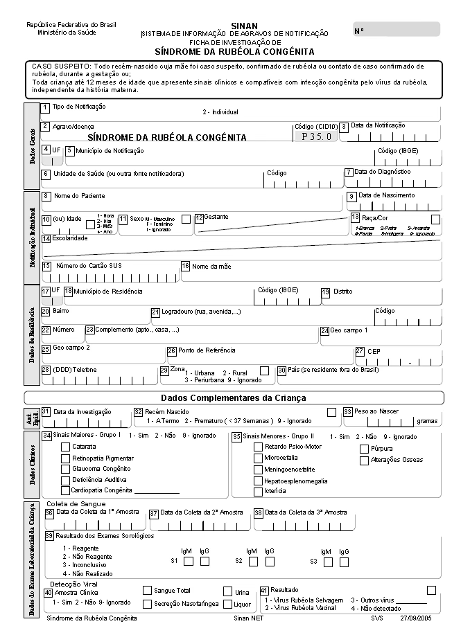

Módulo 3 | Aula 3
Sistemas de Informações Epidemiológicas
Sistema de Informações de Agravos de Notificação (SINAN)
O Sistema de Informação de Agravos de Notificação (SINAN) é uma ferramenta essencial do SUS para a vigilância epidemiológica no Brasil. Seu objetivo principal é coletar, transmitir e disseminar dados sobre doenças e agravos de notificação compulsória, ou seja, problemas de saúde que devem ser obrigatoriamente informados às autoridades de saúde. Sua utilização efetiva permite o diagnóstico dinâmico da ocorrência de eventos na população, fornecendo subsídios para identificar riscos e auxiliar no planejamento da saúde, na definição de prioridades de intervenção e na avaliação de impactos (Ministério da Saúde, 2007).
Profissionais de saúde e responsáveis por serviços de saúde públicos e privados são legalmente obrigados a notificar a suspeita ou confirmação de doenças listadas pelo Ministério da Saúde.
A Lista Nacional de Notificação Compulsória de Doenças, Agravos e Eventos de Saúde Pública teve sua última atualização consolidada pela Portaria GM/MS nº 5.201, de 15 de agosto de 2024. Essa lista é atualizada periodicamente, conforme necessário. A última atualização, por exemplo, trouxe foco inédito e ampliado para questões relacionadas à Saúde do Trabalhador.
Saúde do Trabalhador e Transmissão Vertical:
Confira as atualizações na Lista Nacional de Notificação Compulsória de Doenças, Agravos e Eventos de Saúde Pública
- Câncer relacionado ao trabalho.
- Dermatoses ocupacionais.
- Distúrbio de voz relacionado ao trabalho.
- LER/DORT (Lesões por Esforços Repetitivos).
- Perda auditiva (PAIR) relacionada ao trabalho.
- Pneumoconioses (ex.: silicose, asbestose).
- Transtornos mentais relacionados ao trabalho.
- HTLV (Gestante/Parturiente/Puérpera e Criança exposta).
- Hepatite B (Gestante/Parturiente/Puérpera e Criança exposta).
As doenças e agravos de Saúde do Trabalhador deixaram de ser monitoradas apenas em unidades sentinela e passaram a ser de notificação universal. Ou seja, qualquer unidade de saúde (pública ou privada) deve notificar se houver suspeita de nexo causal com o trabalho. O fluxo de dados notificado segue uma transmissão vertical e hierarquizada: das unidades para o município, do município para o estado e do estado para o nível federal. Além desse fluxo periódico, existem agravos de notificação imediata que exigem comunicação às autoridades sanitárias em até 24 horas após a suspeita inicial, devido à sua gravidade ou risco de disseminação (Ministério da Saúde, 2007). É importante destacar que cada agravo tem um tempo específico de notificação. Confira a seguir os prazos para os principais agravos da lista.
Emergências de Saúde Pública
- Botulismo.
- Cólera.
- Febre Amarela & Febre do Nilo Ocidental.
- Raiva Humana e acidente com animal potencialmente transmissor.
- Sarampo e Rubéola.
- Síndrome Respiratória Aguda Grave (SRAG) associada a Coronavírus (covid-19), influenza etc.
- Doenças de Chagas (aguda).
- Poliomielite (Paralisia Flácida Aguda).
- Varíola (Mpox).
- Eventos de Saúde Pública (ameaça à saúde pública, surtos inéditos).
Vigilância Contínua
- Acidente de Trabalho: (grave, fatal e com exposição a material biológico).
- Arboviroses: dengue, zika, chikungunya.
- Violências: sexual, tentativa de suicídio, doméstica/outras violências.
- Infecções Sexualmente Transmissíveis: HIV/AIDS, sífilis (adquirida, gestante e congênita).
- Micobacterioses: tuberculose e hanseníase.
- Intoxicações Exógenas (agrotóxicos, medicamentos etc.).
- Óbito: materno e infantil.
Para a coleta de dados, o sistema utiliza instrumentos padronizados, sendo os principais a Ficha de Notificação e a Ficha de Investigação. A Ficha de Notificação é usada para registrar casos suspeitos ou confirmados de doenças da lista nacional e também para a Notificação Negativa, que é o procedimento por meio do qual as unidades informam a não ocorrência de doenças na semana epidemiológica, garantindo que o silêncio não seja confundido com falta de dados (Ministério da Saúde, 2007).
Apesar de se tratar de um sistema consolidado e padronizado, por considerar diferentes agravos e doenças, com especificidades e demandas particulares, pode-se dizer que o SINAN se divide em uma série de subsistemas. Em geral, cada agravo tem sua própria ficha de notificação e gera um banco de dados único.
Em resumo, os principais objetivos do SINAN são: apoiar o processo de investigação epidemiológica dos casos reportados, oferecer insumos na análise da situação de saúde da população, auxiliar no planejamento e na definição de prioridades de intervenções em Saúde Pública e facilitar a formulação e avaliação de políticas, programas e planos de saúde para contribuir na tomada de decisões.
Saiba mais sobre os agravos de notificação compulsória e o papel do SINAN no Guia de vigilância em saúde: volume 1, disponível aqui.
Importância
O uso sistemático do SINAN permite o diagnóstico dinâmico da ocorrência de eventos de saúde na população, identificando riscos e subsidiando ações de prevenção e controle de doenças. O SINAN é uma das ferramentas mais importantes para a Vigilância Epidemiológica e Saúde Pública no Brasil. Ele é o sistema responsável por coletar, transmitir e disseminar dados gerados pela rotina do sistema de Vigilância Epidemiológica das três esferas de governo (municipal, estadual e federal).
Entre os potenciais usos do SINAN destacam-se:
- Possibilidade de identificação da realidade epidemiológica.
- Oferta de subsídios para tomada de decisão.
- Obrigatoriedade de vigilância de doenças de notificação compulsória.
- Descentralização da informação.
- Vigilância em saúde ambiental.
- Investigação de surtos.
O SINAN é a ferramenta oficial e fundamental para registro, consolidação e análise de dados sobre doenças e agravos de notificação compulsória, subsidiando a tomada de decisão em saúde pública (Ministério da Saúde, 2024).
Dados coletados
A coleta de dados no SINAN é estruturada de maneira padronizada com o objetivo de garantir consistência e qualidade às informações epidemiológicas nas três esferas de governo. O processo fundamenta-se na utilização de instrumentos de coleta específicos, sendo a Ficha de Notificação o documento principal. Esse formulário deve ser impresso em duas vias pré-numeradas, de modo que a primeira via seja encaminhada para o local de digitação (caso a unidade não seja informatizada) e a segunda permaneça arquivada na unidade de saúde de origem.
Essa ficha é empregada tanto para registrar casos suspeitos ou confirmados da maioria das doenças de notificação compulsória quanto para informar a ausência de doenças (notificação negativa). Para agravos que só são notificados após a confirmação diagnóstica, como tuberculose, hanseníase, Aids, sífilis congênita e doenças relacionadas ao trabalho, o sistema exige o uso da Ficha de Notificação/Investigação específica para cada doença (Ministério da Saúde, 2007).
O SINAN coleta dados por dois tipos de fichas:
- Ficha de Notificação: utilizada para notificar individualmente casos suspeitos e/ou confirmados de agravos de notificação compulsória de interesse nacional, estadual ou municipal, bem como surtos ou agregados de casos e óbitos. Também é usada para notificação negativa (quando não ocorre nenhuma doença a ser notificada).
- Ficha de Investigação: deve ter a mesma numeração da ficha de notificação originária e complementa as informações iniciais, aprofundando a investigação do caso.
- Tipo e data da notificação.
- Data dos primeiros sintomas.
- Nome do agravo/doença notificado(a).
- Tipo de notificação (individual ou surto).
- Nome completo.
- Data de nascimento e idade.
- Sexo.
- Escolaridade.
- Zona de residência (urbana, rural etc.).
- Endereço completo (logradouro, número, complemento, bairro, município, UF, CEP) e, se aplicável, nome da aldeia indígena.
- Telefone de contato.
- País de residência (se estrangeiro).
- Nome e código da unidade de saúde (ou outra fonte notificadora).
- Município e UF da unidade de saúde.
- Nome e função do responsável pela investigação.
- Informações detalhadas sobre a exposição, fatores de risco e condições específicas relacionadas à doença (por exemplo: tipo de animal peçonhento no caso de acidentes, características de lesões na hanseníase).
- Classificação final do caso (confirmado, descartado etc.) e tipo de alta (cura, óbito etc.).
- Dados de acompanhamento do caso.
A lista de doenças e agravos que exigem notificação compulsória é definida por portarias do Ministério da Saúde, mas estados e municípios podem incluir problemas de saúde adicionais de interesse local.
Figura 5 - Exemplo de ficha de notificação da Síndrome da Rubéola Congênita.

Fonte: DATASUS. Acesso à Informação. Transferência de dados. SINAN. Agravos (2026).
Usos e disseminação
O Sistema de Informação de Agravos de Notificação (SINAN) desempenha papel central na vigilância em saúde, operando não apenas como repositório de dados, mas como instrumento estratégico para a tomada de decisão. Seus usos são múltiplos e interconectados. Veja a seguir alguns exemplos de uso comuns.
Permitem entender quais doenças estão afetando a população, onde e em que medida, identificando a realidade epidemiológica de uma área geográfica específica. Um exemplo recente dessa aplicação é o estudo de Veras e colaboradores (2023), que utilizou dados do sistema para traçar o perfil epidemiológico e a distribuição espacial da hanseníase, identificando clusters de transmissão ativa.
Detecção e Monitoramento de Surtos e Epidemias: o registro contínuo dos casos possibilita a detecção precoce de surtos e epidemias, permitindo uma resposta rápida e direcionada das autoridades de saúde. Essa utilidade foi verificada em análises recentes sobre arboviroses, conforme demonstrado por Mendes et al. (2025) ao avaliarem as tendências de incidência e letalidade da dengue em séries temporais interrompidas, fornecendo subsídios para o enfrentamento das epidemias recentes.
Planejamento e Definição de Prioridades: os dados auxiliam no planejamento das ações de saúde, na definição de prioridades de intervenção e na alocação de recursos, garantindo que as ações sejam direcionadas para os problemas mais urgentes.
Servem como base para avaliar o impacto e a eficácia das intervenções e programas de controle de doenças já implementados, como os de controle da tuberculose ou hanseníase. Estudos como o de Ferraz et al. (2024) destacam como painéis de monitoramento alimentados por dados epidemiológicos instrumentam gestores na vigilância e atenção à saúde, otimizando a capacidade governamental de resposta. O sistema também é a base para a Avaliação de Políticas e Programas de Saúde, permitindo mensurar o impacto de intervenções já implementadas. A pesquisa de Silva e Galvão (2024) exemplifica esse uso ao projetar a incidência de tuberculose até 2030, avaliando se as estratégias atuais são suficientes para cumprir as metas de erradicação da doença.
Pesquisadores utilizam a base de dados do SINAN para a realização de estudos epidemiológicos e análises mais aprofundadas sobre as doenças de notificação compulsória. Um exemplo desse tipo de estudo foi o realizado por Lima, Corrêa e Uehara (2024), que investigaram a influência de indicadores socioeconômicos na distribuição da dengue.
A informação gerada ajuda a identificar riscos aos quais as pessoas estão sujeitas, orientando ações preventivas e de promoção da saúde, como discutido por Miranda e Garcia (2023) em trabalho sobre as perspectivas da vigilância em saúde do trabalhador para a redução de riscos e vulnerabilidades.
Os principais canais para obtenção de dados públicos do SINAN são:
O departamento de informática do SUS é o principal repositório e canal de disseminação pública dos dados. Apor intermédio do DATASUS, os arquivos dissemináveis para tabulação, utilizando ferramentas como o TabNet e TabWin, ficam disponíveis para download e análise online.
Ao utilizar os microdados do SINAN, lembre-se de baixar o dicionário de dados, ficha e documentação específica para o agravo em questão.
O Ministério da Saúde, as secretarias estaduais e municipais de saúde publicam regularmente boletins epidemiológicos que utilizam os dados do SINAN para divulgar a situação das doenças no país, estados e municípios.
Materiais informativos e relatórios técnicos elaborados pelas áreas técnicas do Ministério da Saúde são disponibilizados em suas páginas oficiais e na Biblioteca Virtual em Saúde (BVS).
Qualidade
Para garantir a qualidade dos dados, o sistema possui rotinas para identificar e excluir notificações duplicadas e verificar a completude das informações (Ministério da Saúde, 2007). Mesmo assim um dos problemas identificados na bibliografia são problemas de cobertura ou subnotificação de casos.
A qualidade dos dados coletados é heterogênea em todo o Brasil, sendo geralmente considerada de regular a boa, mas com presença de desafios persistentes. A qualidade dos dados do Sistema de Informação de Agravos de Notificação (SINAN) é uma peça-chave para a Vigilância Epidemiológica no Brasil, mas a literatura aponta desafios persistentes, principalmente quanto à completude (Geraldo et al., 2024; Paiva e Fonseca, 2023; Xavier et al., 2023).
Limitações
Apesar de suas potencialidades, o SINAN enfrenta desafios relacionados à qualidade dos dados e à demora no encerramento de casos, o que pode prejudicar as análises epidemiológicas. A garantia da qualidade dos dados e a notificação oportuna são essenciais para que o sistema atinja seu potencial máximo como ferramenta de Saúde Pública. A qualidade dos dados é frequentemente afetada por problemas operacionais, que incluem:
- Subnotificação.
- Falhas de preenchimento (incompletude).
- Inconsistência de dados.
- Duplicidade de registros.
- Atraso na notificação.